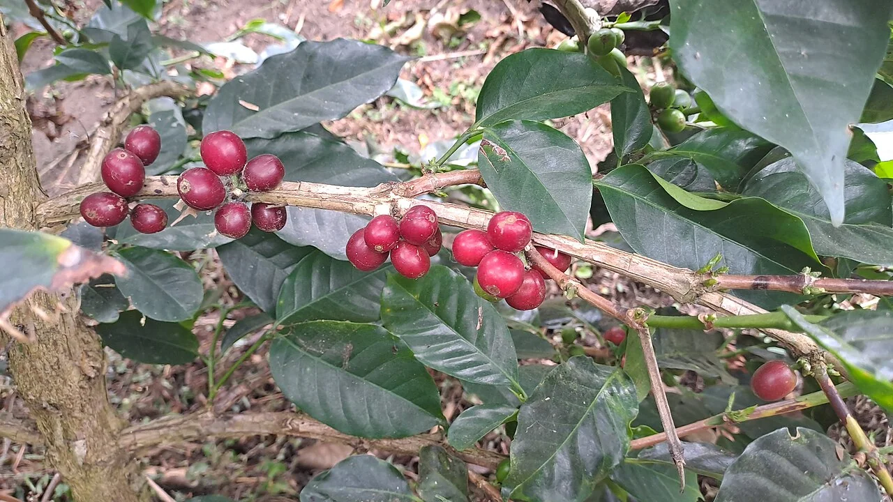
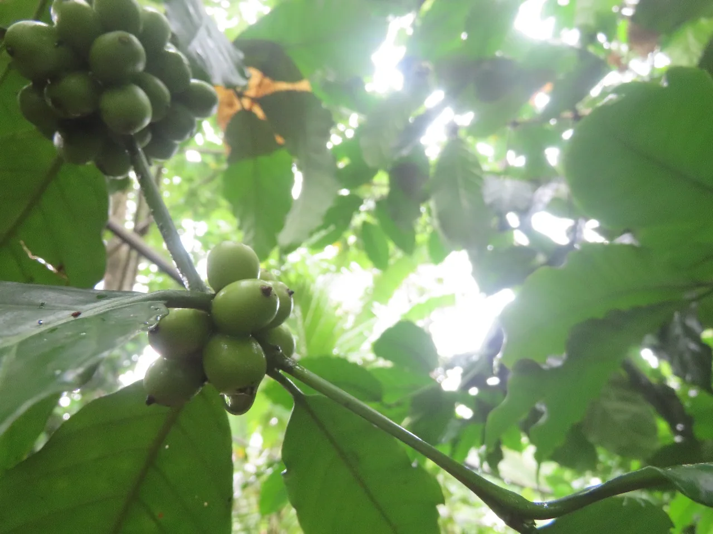
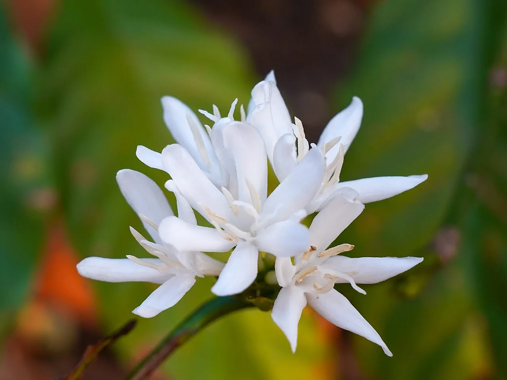

Traditional Robusta
Robusta C×R
Classic Robusta varieties have grown on our farm for generations. They are valued for their bold character and distinctive qualities shaped by the local growing environment.
From the first cherry to the drying bed, every stage of our coffee journey begins in the hills of Vandiperiyar.
Traditional Robusta and a small Arabica cultivation, rooted in the growing landscape of the farm.

Classic Robusta varieties have grown on our farm for generations. They are valued for their bold character and distinctive qualities shaped by the local growing environment.

To expand our coffee cultivation, we have introduced Selection 274, cultivated alongside our traditional C×R varieties.

Our small cultivation of Arabica Chandragiri offers another expression of coffee from our farm, bringing its own aromatic characteristics and profile.
Even on the same branch, cherries develop at different rates. Selective picking leaves younger fruit to mature for another round.

Illustrative crop photographs. Ripeness assessment follows the variety, crop and harvest conditions.
Processing influences how coffee develops during drying and how its characteristics are expressed in the final cup.
Handpicked cherries are sorted and handled for the chosen lot. Care at this stage sets the direction for processing.
Natural coffee dries within the whole cherry. The fruit and seed remain together during the drying stage.
For pulped coffee, the outer skin is removed before drying. Our team follows the processing method appropriate for each lot.

Raised drying beds allow air to circulate beneath the coffee, helping the team turn, inspect and monitor the coffee as it dries.
The drying process is an important part of preserving the quality of the harvest. Each lot needs attention through this final stage at the farm.
Follow the coffee journey. Six moments, connected by care.
The journey begins with delicate white coffee blossoms. Flowering gives way to fruit, shaped by the growing season and the care of the farm team.

See how the landscape and the work of the farm connect, from cherries on the branch to coffee on the drying bed.